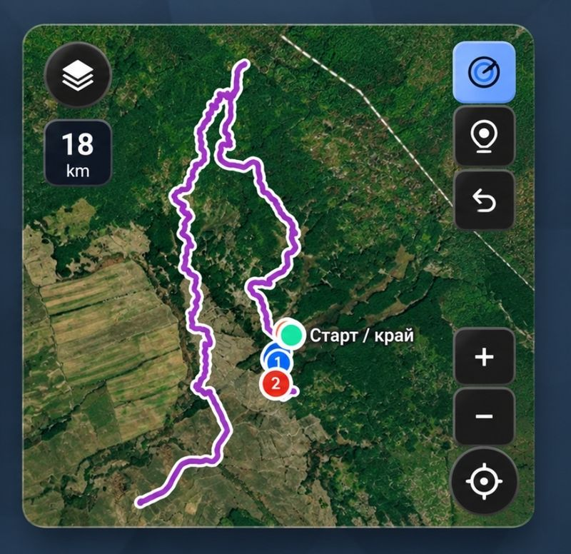

Бележки и маршрути, събрани на едно място. Изберете плочка и продължете направо в приложението.
Бележки на стикери върху коркова дъска. Пиши, закачай и мести, без да губиш подредбата. Всяка бележка пази дата, час и прикачени файлове. Снимките и видеата се качват направо в бележката. Синхронизира се с Google Drive и работи и офлайн.

Записва маршрута, докато вървиш или караш. Старт, междинни точки и край на една карта. Разстояние, време и надморска височина за всяка следа. Спътникова карта, за да виждаш терена. Следите остават при теб и се пазят на телефона.